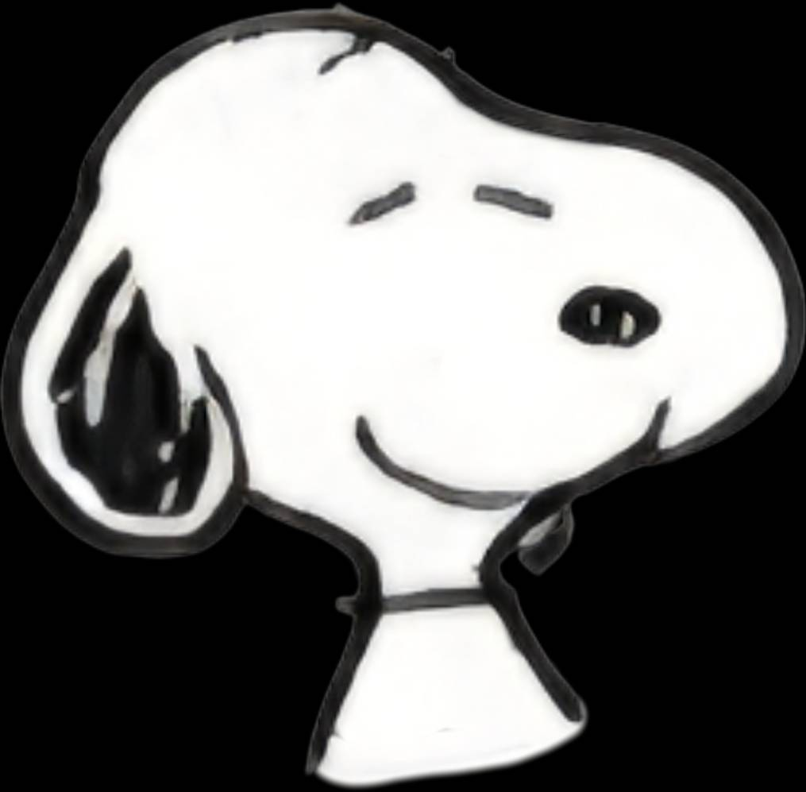

史努比 (Snoopy)
身分設定：一隻小獵犬卻不承認自己是隻狗。
思維天馬行空、超級自信，也是狗中的偽裝天才。他幽默風趣、與世無爭又處變不驚，令人喜愛。對女孩子很溫順、親切，作為第一次世界大戰的王牌飛行員，他與臭名昭著的紅色男爵在天空中激戰。
⬅ 返回首頁總覽
身分設定：一隻小獵犬卻不承認自己是隻狗。
思維天馬行空、超級自信，也是狗中的偽裝天才。他幽默風趣、與世無爭又處變不驚，令人喜愛。對女孩子很溫順、親切，作為第一次世界大戰的王牌飛行員，他與臭名昭著的紅色男爵在天空中激戰。
⬅ 返回首頁總覽